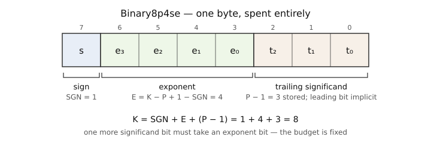

Formats and Values
This chapter defines the format space, shows how a value names a datum, and states the constructor rule that prevents the most common usage error.
The format space
Every format is an instance of one parametric type, Binary{K,P,SGN,EXT}: bitwidth K ∈ 3:16, precision P (significand bits, implicit bit included), SGN for signed or unsigned, EXT for extended (with ±Inf) or finite. Each legal combination — 504 in total — has a concrete alias whose name encodes the parameters: Binary8p4se is 8-bit, precision 4, signed, extended.
The bitwidth is a fixed budget, spent entirely:

One sign bit if signed, E = K − P + 1 − SGN exponent bits, and P − 1 stored significand bits. Raising precision by one bit removes one exponent bit; choosing a format is choosing this trade.
using SmallFloats exports the 120 aliases at K ≤ 8. The other 384 are available three ways — fully qualified, via using SmallFloats.Formats, or programmatically:
julia> T = format(16, 6, true, true)
Binary16p6se
julia> codeunit_type(T), SmallFloats.datumcarrier(T)
(UInt16, Float64)Code points occupy a UInt8 at K ≤ 8 and a UInt16 above. decode returns the format's datum carrier: Float64 for the 432 formats it holds exactly, Float128 or an exact dyadic carrier for the other 72. Both are representation details; the value model does not change with K.
One practical caution. The abstract type Binary{8,4,true,true} is a supertype of the concrete Binary8p4se, and it is not a valid array element type: Vector of the abstract format boxes every element and loses all of the performance machinery. Use the concrete alias, or format(...), in element types.
A format, listed in full
Small formats can be inspected completely. Binary4p2se has 16 code points, and this listing is the entire format:
julia> decode.(sort(Binary4p2se.(0x00:0x0f)))
16-element Vector{Float64}:
NaN
-Inf
-2.0
-1.5
-1.0
-0.75
-0.5
-0.25
0.0
0.25
0.5
0.75
1.0
1.5
2.0
InfThe same table for any format, in storage order or total order, is a few lines. No projection is involved — decode is exact and policy-free, so the table depends on the format alone:
function codetable(::Type{F}; by::Symbol = :code) where {F<:Binary}
U = codeunit_type(F) # UInt8 at K ≤ 8, UInt16 above
vals = [F(U(c)) for c in 0:(1 << bitwidth(F)) - 1]
by === :value && sort!(vals) # total order: NaN first
[(code = codepoint(v), value = decode(v)) for v in vals]
endcodetable(Binary4p2se) lists code 0x08 — the sign bit alone — as the single NaN, with negatives mirroring the positives above it; codetable(Binary4p2se; by = :value) reproduces the sorted listing above. The reverse table, value → code, does need a projection: codepoint(Convert(F, ρ, x)), one rounding per entry.
Three P3109 design decisions are visible here. There is exactly one NaN, with no payloads and no quiet/signalling distinction. There is no negative zero; T(-0.0) projects to the single zero. And NaN sorts first, below −Inf: the draft's total order places it at the opposite end from Float64 sorting, which gives sorting and searching deterministic behavior. Finite formats (suffix f) assign the two infinity code points to two additional finite datums.
Construction projects
julia> x = Binary8p4se(1.6)
Binary8p4se(1.625 ⇆ 0x45)The number 1.6 is not among the format's values. Its nearest neighbors are 1.5, 1.625, and 1.75, spaced 0.125 apart in this binade, so construction rounds to the nearest datum and stores that datum's code point. Constructors from a Real never throw for representable magnitudes; they round.
decode and codepoint read back the two halves:
julia> decode(x), codepoint(x)
(1.625, 0x45)decode never rounds; it is a lookup from code point to datum. The asymmetry matters: reading is exact, writing projects.
The code-point rule
An Unsigned argument means code point. Every other Real argument means a value to project. The integer type's signedness is the entire distinction:
julia> Binary8p4se(0x02), Binary8p4se(2)
(Binary8p4se(0.001953125 ⇆ 0x02), Binary8p4se(2.0 ⇆ 0x48))The same digit, read two ways, differs by a factor of 1024 here — and neither call is an error, so a wrongly-typed integer produces a valid, different result rather than a failure. Use unsigned integers when you mean stored identity (a byte read from a file, a wire format). Use signed integers or any other Real when you mean a number. When intent must be explicit regardless of the argument's type, Convert(T, ρ, x) always projects numerically.
The round-trip law holds in one direction: T(codepoint(x)) === x for every valid code point. The other direction fails by design — decode(T(1.6)) returns 1.625, because construction already chose a datum, and nothing downstream can recover the original argument.
Predicates, stepping, classification
The standard numeric vocabulary applies to every format: isnan, isinf, isfinite, iszero, signbit, issubnormal, along with zero, one, eps, typemin, and typemax, all answering from the format's own grid. Stepping moves to the adjacent code point, and Class reports the draft's classification:
julia> NextGreaterThan(Binary8p4se(1.0))
Binary8p4se(1.125 ⇆ 0x41)
julia> Class(Binary8p4se(0.01))
ClassPosNormal::FPClass = 0x06NextGreaterThan and NextLessThan are the draft's Next operations; nextfloat and prevfloat alias them.
One related distinction: Base's lowercase convert is value-preserving on Unsigned input — convert(Binary8p4se, 0x02) is the value 2.0, not code point 2 — because Julia's promotion machinery, similar, and fill depend on that behavior. The code-point reading belongs to the constructor alone. Prefer T(x) or Convert(T, ρ, x) in your own code and leave bare convert to the places Base itself calls it.
Display
Four styles render the same value: :value (1.625), :codepoint (0x45), :datum (1.625 ⇆ 0x45), and :typed (Binary8p4se(1.625 ⇆ 0x45)). Select one process-wide with set_show_style! or per-stream with the :binary_show_style IOContext property. Display is presentation only; no kernel or comparison reads it. This guide uses :typed throughout.
Next
Values exist but nothing has computed with them. Construction from a Real rounded, and this chapter did not say by what rule. The rule is a policy the caller selects, and it is the subject of Computing.